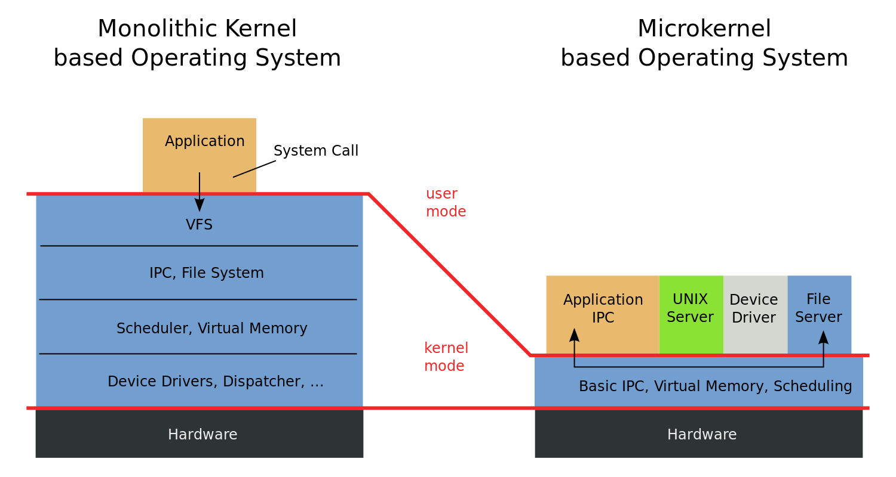

从逻辑门到计算机系统
数字系统：计算机系统的 “公理系统”
数字系统 = 状态机
- 状态：触发器
- 迁移：组合逻辑
- logisim.c 和 seven-seg.py
- NEMU Full System Emulator

数字系统的设计 = 描述状态机
- HDL (Verilog)
- HCL (Chisel)
- 编译生成 Verilog
- HLS (High Level Synthesis)
- “从需求到代码”
编程语言和算法
C/Java/Python 程序 = 状态机
- 状态：栈、堆、全局变量
- 迁移：语句 (或语句一部分) 的执行
- “程序设计语言的形式语义”
- hanoi-nr.c
编程 = 描述状态机
- 将人类世界的需求映射到计算机世界中的数据和计算
- DFS 走迷宫 dfs-fork.c
- Dijkstra 算法求最短路径……
- 允许使用操作系统提供的 API
- 例子：
write(fd, buf, size)持久化数据
- 例子：
如何使程序在数字系统上运行？
指令集体系结构
- 在逻辑门之上建立的 “指令系统” (状态机)
- The RISC-V Instruction Set Manual
- 既容易用电路实现，又足够支撑程序执行
编译器 (也是个程序)
- 将 “高级” 状态机 (程序) 翻译成的 “低级” 状态机 (指令序列)
- 翻译准则：external visible 的行为 (操作系统 API 调用) 等价
操作系统 (也是个程序)
- 状态机 (运行中程序) 的管理者
- 使程序可以共享一个硬件系统上的资源 (例如 I/O 设备)
操作系统对象和 API

- Concurrency - thread.h 和 mem-ordering.c 打开潘多拉的盒子
- Virtualization - sh-xv6.c; fork-printf.c; dosbox-hack.c
- Persistence - fatree.c; fish-dir.sh
你们获得了 “实现一切” 的能力！
M1 - pstree
- 打印进程树 (文件系统 API; procfs)
M2 - libco
- 进程内的状态机管理 (setjmp/longjmp)
M3 - sperf
- strace (pipe; fork; execve)
M4 - crepl
- 动态链接和加载 (fork; execve; dlopen)
M5 - freov
- 文件系统解析 (mmap)
你们也获得了 “理解一切” 的能力！
“操作系统” 课给了你程序的 “最底层” 的状态机视角
- 也给了很多之前很难回答问题的答案
- 如何创造一个 “最小” 的可执行文件？
a.out是什么？a.out执行的第一条指令在哪里？printf是如何被调用的？a.out执行了哪些系统调用？a.out执行了多少条指令？- inst-count.py
perf stat -e instructions:u
你们还理解了操作系统是如何实现的

操作系统实现选讲
- 从 Firmware 到第一个用户程序 bootmain.c
- 迷你 “操作系统” thread-os.c
- Xv6
- 真正的 “教科书” 代码
- spinlock-xv6.c
- 系统调用；文件系统；……
- linux-minimal.zip
- “核弹发射器” 驱动
- OSLabs
从逻辑门到计算机系统

刷一下手机，你的计算机系统经历了非常复杂的过程
- 应用程序 (app) → 库函数 (Android Framework) → 系统调用 → 操作系统中的对象 → 操作系统实现 (C 程序) → 设备驱动程序 → 硬件抽象层 → 指令集 → CPU, RAM, I/O设备 → 门电路
操作系统课给这个稍显复杂的过程一个清晰的轮廓
- “这一切是可以掌控的”
- RTFM! RTFSC!
走得更远
所以你到底学到了什么？
Operating systems (最重要的那个 piece): you're delighted
你不再惧怕任何 “system”
- 嵌入式系统
- 通用操作系统
- 分布式系统
- ……
也不再惧怕任何 “需求” 的实现
- 找到合适的系统调用实现
- 做不到？可以自己加个系统调用
- 软件上实现不了？可以改 CPU 来支持！
Hacker's Delights: 新的“理解”
“一切皆状态机”
- 状态的副本 (fork) 可以用来做什么？
- Model checking, failure recovery, ...
“死锁检测: lockdep 在每次 lock/unlock 的时候插入一条 printf”
- 这就是 dynamic analysis 的本质
- 如何减少 printf 的数量、怎么巧妙地记录、怎样分析日志……
- 如何调控程序的执行？找到 bug 还是绕开 bug？
“文件系统是磁盘上的一个数据结构”
- 通过 append-only 实现 journaling
- LSM Tree 和分布式 key-value store
- Block chain 也是一个数据结构！
并发：走向分布式系统
如何为网络上的多台计算机提供统一的应用程序接口？
- 把多个分布的、随时可能离线的计算机组成一个存储系统
- 在存储的基础上完成计算

虚拟化：重新理解操作系统设计
Microkernel, Exokernel, Unikernel
- 没有人规定操作系统里一定要有 “文件”、“进程” 这些对象

持久化：重新理解持久存储设计
文件系统没能解决的需求
- 大量的数据 (订单、用户、网络……) + 非简单目录遍历性质的查询
“数据库”：虚拟磁盘上的数据结构
- 就像我们在内存 (random access memory) 上构建各种数据结构
- Binary heap, binary search tree, hash table, ...
- 典型的数据库
- 关系数据库 (二维表、关系代数)
- key-value store (持久化的
std::map) - VCS (目录树的快照集合)
- SSD 和 NVM 带来的新浪潮
和操作系统相关的 Topics
- Computer Architecture
- 计算机硬件的设计、实现与评估
- Computer Systems
- 系统软件 (软件) 的设计、实现与评估
- Network Systems
- 网络与分布式系统的设计、实现与评估
- Programming Languages
- 状态机 (计算过程) 的描述方法、分析和运行时支持
- Software Engineering
- 程序/系统的构造、理解和经验
- System/Software Security
- 系统软件的安 (safety) 全 (integrity)
五周目总结
上操作系统课的乐趣
在课堂上时，你可以思考一些已经很清楚的基本东西。这些知识是很有趣、令人愉快的，重温一遍又何妨？另一方面，有没有更好的介绍方式？有什么相关的新问题？你能不能赋予这些旧知识新生命？……但如果你真的有什么新想法，能从新角度看事物，你会觉得很愉快。
学生问的问题，有时也能提供新的研究方向。他们经常提出一些我曾经思考过、但暂时放弃、却都是些意义很深远的问题，重新想想这些问题，看看能否有所突破，也很有意思。
学生未必理解我想回答的方向，或者是我想思考的层次；但他们问我这个问题，却往往提醒了我相关的问题。单单靠自己，是不容易获得这种启示的。 —— Richard Feynman
五周目的主要改进
课程主线
- 实现了 “一切皆状态机” 的教学思路 (四周目整改项目)
- 改进了 model checker
- 增加了一些以往很难讲的主题
- “编译器可以做什么样的优化”、“形式化验证”……
- 更明确地问题驱动 (四周目整改项目)
- 在一定程度上实现了，但感觉还不满意
代码
- 增加了更多的示例代码 (四周目整改项目)
- dosbox-hack.c, dlbox.c, fatree.c
- 以及一系列的代码改进
- 动态链接似乎讲得更清楚了
自我批评与六周目
课程主线
- 还欠一些代码
- RAID 模拟器 (OSTEP 上的模拟器不太适合课堂教学)
- Xv6 文件系统 block trace 和崩溃恢复
- ...
- Model checker: Once and for all
- 并发 + 进程 + crash consistency
- 重写课程网站/Online Judge
- 整改项目，再再次未能如愿
其他
- 欢迎大家提建议/意见 (例如 “增加 XXX 代码就好了”)
我们置身的时代
Google 不是偶然的

Apple 和 Facebook 也不是偶然的

伟大的发明都不是完全偶然的
Bill Gates 在 1975 年开发 Altair BASIC 时在 Harvard 的大型机上实现了全系统模拟器 (Intel 8080A)
- 南京大学《计算机系统基础》课程花了 40 年才追上

创新的基因和工匠的精神

任何颠覆性的技术，在诞生的那一刻都是 “简单” 的
- 但我们做好产业化的准备了吗？
- 10,000 行代码 ← Linux 0.11
- 100,000 行代码
- 初步的技术壁垒
- 1,000,000 行代码
“三体人的封锁” - 反制三体人的必经之路
- 10,000,000 行代码
- 工业级技术的成熟
创新的基因和工匠的精神 (cont'd)

大型项目持久的竞争力和生命力
- Apple
- Apple Silicon; Rosetta-2; ...
- Google
- Android, ChromeOS, Fuchsia, ...
- Microsoft
- .NET, Windows NT, Windows Subsystem for Linux, Windows on ARM, ...
- 开源社区项目
- GNU, Mozilla, Apache, Linux Kernel, MySQL, QEMU, Wine, ffmpeg, ...
脖子被卡也不是偶然的
高考：为大众提供了阶级跃升的途径
代价：过度强化的训练和 (部分) 扭曲的价值观
- 进入大学以后的 “去高考化” 反而没有做好
- 陈腐乏味的课程
- 局限的视野
- 稳固的舒适区
- 畏惧哪怕一点点的风险
“我也想去改变世界，但拿什么去改变呢？”
在座各位的使命
重新定义 “专家”。
- 那些愿意站出来颠覆一个行业的人
- 那些能管理好工程项目的人
- 那些能驾驭的了大规模代码的人
- 去共同完成一些旁人看来 “惊为天人” 的东西，
- 去推动这个世界的进步
我们的征途是星辰和大海。
对自己要求高一点
(没什么前途的老学长对你们的期待)